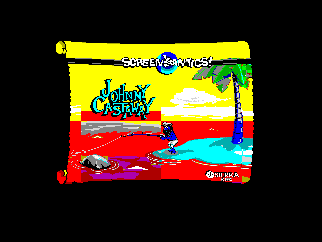
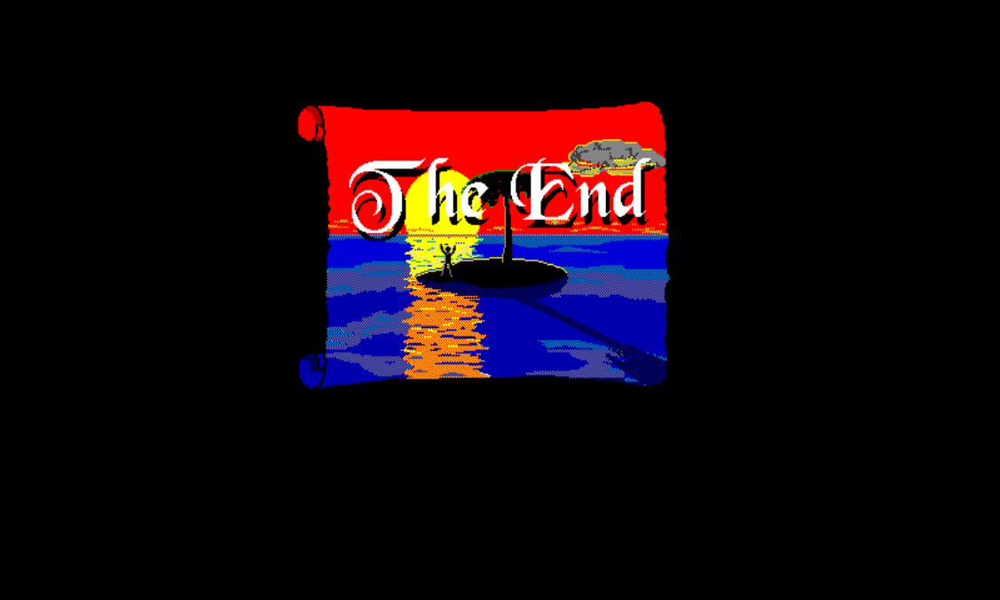

A fan port · v0.6.4
Johnny Castaway PS1
A ground-up PlayStation 1 port of Sierra's Johnny Castaway — one scene at a time.



What this is
Sierra’s Johnny Castaway (1992) is a screensaver about a man stranded on a tiny island. It runs in tiny vignettes — a fishing line, a passing ship, a holiday decoration — quietly, all day.
This is a port of those vignettes to the original Sony PlayStation, running on real hardware or on DuckStation. It is a fan project: the character belongs to the original creator, and the site’s chrome and its legal page reflect that.
It’s also a work in progress. Out of 63 scenes, 9 are validated under the fishing-1 bar (pixel-perfect visuals plus synced SFX, signed off by human review across every applicable variant). The scene ledger shows the rest.
How it works (the short version)
A host build of the original engine plays each scene under capture mode and dumps FG2 packs — small binary files that record every visible draw, every sound trigger, every frame timing. The PS1 build loads those packs from the disc and replays them against its own background, wave animation, holiday overlay, captions, and SPU audio.
The PS1 never interprets Sierra’s bytecode at runtime. That’s the whole trick. A 1992 screensaver fits onto a CD-ROM and inside 2 MB of RAM because all of the smart work is done on a desktop and pre-baked.
The full deep-dive — pack format, hardware gotchas, the SPI pad-poll fix that cost two days, the dirty-rect bookkeeping that wiped framebuffers on resume — lives at /about/method/.
Where to start
-
Help guide
Controls, menu screenshots, and the scripted-input test path that proves the menu still works headlessly.
-
Just play it
Latest
.bin+.cue, DuckStation quickstart, controller map. Five minutes. -
How the port works
The hybrid pipeline, the pack format, hardware constraints, and the things that broke on the way.
-
Live scene ledger
All 63 scenes, current validation status, last-verified release tag, per-scene case studies.
-
The full story
Five chapters: 1992 Sierra, the prior reverse-engineering ports, the false starts, and the hybrid pivot.
-
Magazine-length Lab
Feature essays on LLM-assisted development, hallucination control, build farm, and regression practice.
-
Curious hacker path
For readers who want to learn C, port Johnny to another target, or understand the debugging loops that unlocked the PS1 build.
-
Unedited devlog
The dated worklogs that drove each phase. Verbatim, no hindsight, dead ends preserved.
-
Reference docs
Build, captions, holidays, pause menu, scripted input, regtest, the SDL2 → PSn00bSDK API mapping.
-
Source library
Every Markdown file outside the site wrapped into a public shelf page, from current manuals to old research fossils.
-
Resource catalog
Bitmap, ADS, TTM, sound, sprite-bank, and foreground-pack inventory with direct source links.
What’s faithful, what’s added
Faithful to 1992. Every scene the original game has, in original order, with the same variants the original randomized between. The art is unchanged. The 4 original holiday decorations (Christmas, New Year, Halloween, St. Patrick’s Day) keep their original sprites.
Added on top. Freeplay/debug mode, where Johnny can be walked around the island directly with the controller and debug-selected gags, visitors, sound effects, holidays, tide, raft, and day/night state. Closed captions for every scene (off by default, in a fresh-authored corpus from scene content — not lifted from any prior project). A holiday calendar expanded from 4 to 36 holidays with movable feasts computed by pure algorithm — Meeus for Easter, Nth-weekday-of-month for the rest, no expiring date tables. A pause menu with options toggles split into Freeplay Options, World Options, Accessibility, Sound Test, System, date/time editing, island-position nudging, and RNG seed override. The website credits and legal pages name exactly what’s owed to whom.
The full menu of what’s added vs preserved lives at /about/. The implementations live at /docs/, the complete documentation shelf is /source/, and the runtime assets are indexed at /resources/.
The shortest possible welcome
The project’s credits text reads, verbatim:
A labor of love by Hunter Davis.
Hunter does not own or have a license to the Johnny Castaway character. The original creator generously allows fan ports.
If you paid for this, you were cheated. Open source and free. github.com/huntergdavis/johnny-castaway-ps1
That text is the voice of the project credits. It is also the voice of this whole site. There’s no marketing copy, no “experience the magic,” no Patreon banner above the fold. It’s a small project about a small man on a small island. The disc plays. That’s what mattered.
Latest from the devlog
-
Ocean Ambience — v0.6.0-ps1 — May 1, 2026 A CC0-sourced 20-second ocean loop on a dedicated SPU voice. Pause-menu toggle, memcard-persisted, zero CPU cost in steady state. The screensaver's per-VBlank budget is unchanged; the SPU plays + auto-loops in hardware while the screensaver loop runs as before.
-
Freeplay debug mode — May 1, 2026 Direct-control Johnny moved from design sketch to a playtestable PS1 mode: analog walking, fishing, menu-driven gag/visitor catalogs, immediate world toggles, frog loading transitions, and a stricter no-per-frame-allocation rule.
-
Milestones — April 25, 2026 A status snapshot from a single-day batch that pushed the PS1 port across several long-standing unknowns: working TTY, an instrumentable perf module, an on-PS1 pause menu, a hand-rolled SPI controller driver, and memcard-backed user settings.
-
PS1 Fishing 1 Water Animation — Session Worklog, April 21, 2026 Unedited session worklog from the day the missing-waves bug in fishing1 was traced to numSprites[0] == 0 after adsInitIsland. The dead ends are why this exists.
The disclaimer, plainly
Johnny Castaway, the character, the screensaver, and the original
Sierra art and audio are © Sierra On-Line and not licensed under GPL.
This project ships only the code that drives the port. The released
.bin / .cue contains pre-baked playback packs — derived data, no
Sierra source files. The host build, used in development, requires
the original Sierra data files (RESOURCE.MAP, RESOURCE.001) which
the user supplies themselves.
Full text at /legal/.